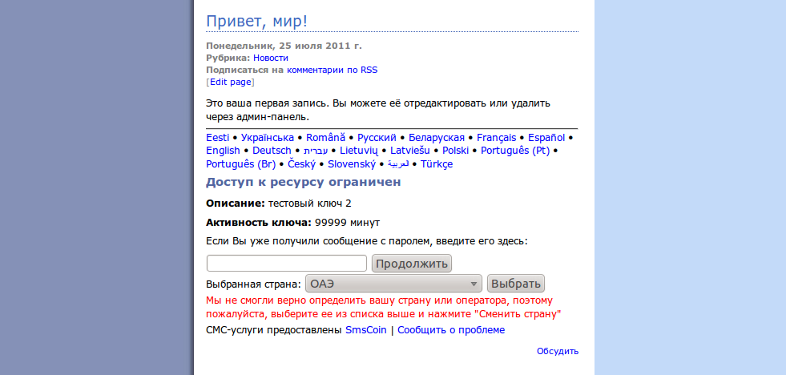
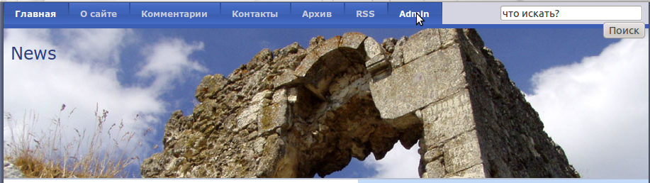
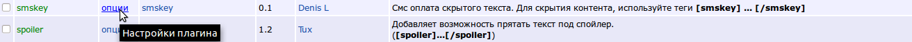
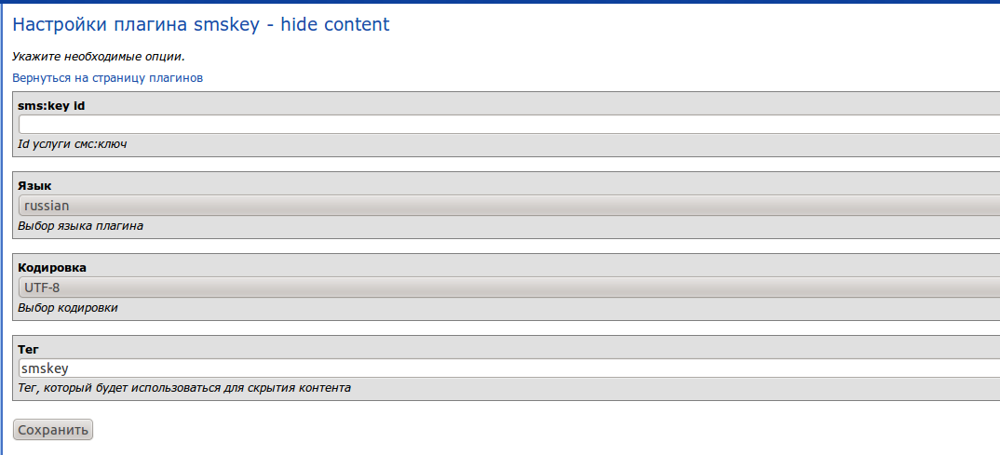

SmsCoin - оплата скрытого текста (для MaxSite CMS 0.54)посредством отправки смс-сообщения, на основе услуги смс:ключ.Вся информация, предоставленная в рамках данного программного продукта, принадлежит проекту SmsCoin и его владельцам. Данный программный продукт предназначен для участников партнерской программы сайта http://smscoin.com/ при использовании услуги СМС:КЛЮЧ. Использование программного продукта или его части вне означенной партнерской программы является нарушением прав компании и преследуется в соответствии с действующим законодательством. Компания Agregator ltd. Israel не несет никакой ответственности за функционирование данного программного обеспечения, а также за потерю прибыли, в том числе упущенную выгоду, и/или убытки, связанные с использованием данного программного обеспечения. |
Принцип работы модуля:Этот плагин позволяет обеспечить платный доступ к чему-либо на вашем сайте. В ответ на присланное смс-сообщение пользователю приходит короткий текстовый пароль (ключ), с помощью которого он может получить доступ к тому, что вы закроете этим ключом. Вы сами решаете сколько раз или как долго можно использовать пароль для доступа. Вы можете скрыть что либо тегом который указан в настройках модуля, для того чтобы скрыть что-либо выбранным тегом, в любой части страницы напишите [ваш_тег] скрытый текст [/ваш_тег]. Пример:  |
Установка:
   Установка завершена!Отключение:Удаление:Модуль удален. |